무선설비기사 (2012-03-11 기출문제)
1과목: 디지털 전자회로
1. 다음 그림은 정류회로의 입력파형과 출력파형을 나타내었다. 주어진 입출력 특성을 만족시키는 정류회로는? (단, 다이오드의 문턱전압은 0.7[V]이고, 변압기의 권선비는 1:1이라 가정한다.)
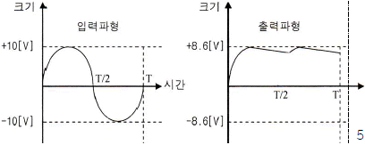
- 반파정류회로
- 중간탭 전파정류회로
- 2배압 정류회로
- 용량성 필터를 갖는 브리지 전파정류회로
(정답률: 79%)

2. 다음 그림에서 1차측과 2차측의 권선비가 5:1일 때, 1차측의 입력전압 Vrms=120[V]이다. 2개의 다이오드가 이상적이라고 가정할 때 직류 부하 전류의 평균치는 약 얼마인가?
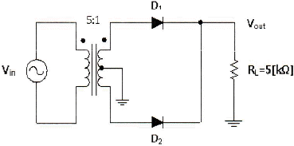
- 1.74[mA]
- 2.16[mA]
- 5.11[mA]
- 6.82[mA]
(정답률: 53%)
3. 무부하일 때 직류 출력전압이 120[V]인 전원회로의 전압 변동률이 20[%]일 때 이 전원회로의 부하시 직류 출력전압은 얼마인가?
- 100[V]
- 10[V]
- 110[V]
- 11[V]
(정답률: 73%)
4. 다음 캐스코드 증폭기에 대한 설명으로 틀린 것은?
- 입력단은 공통베이스, 출력단은 공통이미터로 구성된 증폭기이다.
- 전압 궤환율이 매우 적다.
- 공통베이스 증폭기로 인해 고주파 특성이 양호하다.
- 자기 발진 가능성이 매우 적다.
(정답률: 58%)
5. 전력증폭기의 직류공급 전압은 12[V], 전류는 400[mA]이고 효율이 60[%]일 때 부하에서의 출력전력은?
- 0.7[W]
- 1.44[W]
- 2.88[W]
- 4.8[W]
(정답률: 67%)
6. 선형 증폭기 동작을 위한 바이어스 조건은?
- A급 동작
- B급 동작
- C급 동작
- D급 동작
(정답률: 77%)
7. 이상적인 OP-AMP의 특성으로 틀린 것은?
- 입력임피던스(Zi)가 무한대이다.
- 출력임피던스(ZO가 무한대이다.
- 전압이득(AV)이 무한대이다.
- CMRR(동상제거비)는 무한대이다.
(정답률: 70%)
8. 그림은 윈-브릿지(Wein-bridge) 발진회로이다. R1, R2 값이 감소할 경우 발진주파수의 변화는?
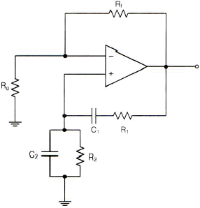
- 증가한다.
- 감소한다.
- 변화없다.
- 발진이 되지 않는다.
(정답률: 75%)
9. 발진을 위한 조건으로 적합한 것은?
- 클리퍼 회로가 필요하다.
- 증폭기에 부궤환 회로를 부가한다.
- 공진 결합 회로가 필요하다.
- 증폭기에 정궤환 회로를 부가한다.
(정답률: 65%)
10. 주파수변조를 진폭변조와 비교할 경우 잘못된 것은?
- 점유주파수대폭이 넓다.
- 초단파대의 통신에 적합하다.
- S/N비가 좋아진다.
- Echo의 영향이 많아진다.
(정답률: 75%)
11. 정보 전송의 변복조 기술에서 반복 주기가 일정한 펄스의 시간폭을 신호파의 진폭에 대응하여 변화시키는 방식은?
- PCM
- PPM
- PWM
- PAM
(정답률: 55%)
12. 멀티바이브레이터의 단안정, 무안정, 쌍안정의 동작은 어떻게 결정되는가?
- 전원 전압의 크기
- 바이어스 전압의 크기
- 전원 전류의 크기
- 결합회로의 구성
(정답률: 73%)
13. 그림과 같은 회로에 대한 설명 중 옳은 것은?
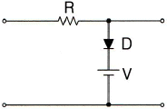
- 입력 파형의 아랫부분을 잘라내는 베이스 클리퍼 회로이다.
- 입력 파형의 윗부분을 잘라내는 피크 클리퍼 회로이다.
- 직렬형 베이스 클리퍼 회로이다.
- 입력 파형의 위, 아래 부분을 일정하게 잘라내는 클리퍼 회로이다.
(정답률: 75%)
14. 다음 논리 함수
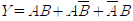
를 간소화하면 옳은 것은?- A+B
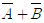
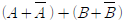
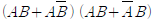
(정답률: 79%)
15. 2-out of-5 code에 해당하지 않는 것은?
- 10010
- 11000
- 10001
- 11001
(정답률: 78%)
16. 다음 중 두 게이트 입력이 0과 1일 때, 1의 출력이 나오지 않는 것은?
- NOR 게이트
- OR 게이트
- NAND 게이트
- Exclusive OR 게이트
(정답률: 70%)
17. 30:1의 리플계수기를 설계할 때 최소로 필요한 플립플롭의 수는?
- 4
- 5
- 6
- 8
(정답률: 75%)
18. 반감산기의 동작을 옳게 나타낸 것은?
- 1자리의 2진수의 감산을 하는 동작을 한다.
- 2자리의 2진수의 감산을 하는 동작을 한다.
- 3자리의 2진수의 감산을 하는 동작을 한다.
- 1자리의 carry를 덧셈과 같이 감산하는 동작을 한다.
(정답률: 66%)
19. 비동기 카운터와 관계없는 것은?
- 리플 카운터라고도 한다.
- 설계가 쉽다.
- 전단의 출력이 다음 단의 트리거 입력이 된다.
- 속도가 빠르다.
(정답률: 65%)
20. 다음의 디지털 장치에서 디코더(decoder)의 반대 동작을 하는 장치는?
- 멀티플렉서(multiplexer)
- 전가산기(full adder)
- 디멀티플렉서(demultiplexer)
- 인코더(encoder)
(정답률: 83%)
2과목: 무선통신 기기
21. 수정발진기에서 수정진동자의 직렬공진주파수를 fs, 병렬공진주파수를 fp라고 할 때, 안정된 발진을 위한 동작출력주파수 fo는?
- fo < fs < fp
- fo = fp = fs
- fs < fo < fp
- fs > fo > fp
(정답률: 73%)
22. 수신기의 전기적 성능 중 수신기에 일정 주파수 및 일정 진폭의 희망파를 가할 때, 재조정하지 않고 오랜 시간동안 일정 출력을 얻을 수 있는가를 나타내는 지수는?
- 감도
- 안정도
- 충실도
- 선택도
(정답률: 72%)
23. 페이딩(Fading)에 의한 수신전계강도 변화에 대해 수신기 출력을 일정하게 하기 위한 회로는?
- 자동주파수제어회로(AFC)
- 자동이득조정회로(AGC)
- 자동잡음제어회로(ANL)
- 자동전력제어회로(APC)
(정답률: 83%)
24. 위성 통신에 사용되는 주파수 대역 중 12.5~18[GHz]를 무엇이라고 하는가?
- C
- Ku
- Ka
- X
(정답률: 87%)
25. 다음 중 아날로그 신호의 진폭변조(AM) 방식에 해당되지 않는 것은?
- DSB-SC(Double Side Band Suppressed Carrier)
- SSB(Single Side Band)
- VSB(Bestigial Side Band)
- PAM(Pulse Amplitude Modulation)
(정답률: 79%)
26. 100[MHz]의 반송파로 주파수가 50[KHz]인 정현파 신호를 주파수 변조할 때 주파수 감도계수 ?? =100을 사용한다고 가정하자. 정현파 신호의 진폭을 10으로 하였을 때 FM 변조된 신호의 대역폭은?
- 102[KHz]
- 120[KHz]
- 240[KHz]
- 300[KHz]
(정답률: 67%)
27. 이진변조에서 M-진 변조로 확장할 때 다음 중 주파수 효율이 가장 낮은 변조방식은?
- M진 ASK
- M진 FSK
- M진 PSK
- M진 QAM
(정답률: 68%)
28. 다음은 어떤 변조방식의 성상도를 나타낸 것인가?
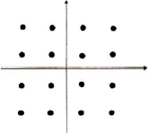
- 16 PSK
- 16 ASK
- 16 QAM
- 16 FSK
(정답률: 91%)
29. 다음은 UPS의 LINE 인터랙티브 방식에 대한 설명이다. 올바른 것은?
- 상용전원을 컨버터회로에 의해 직류로 바꾸고 이를 축전지에 충전하고 인버터 회로를 통해 교류전원으로 바꾼다.
- 사용전원은 그대로 출력으로 내보내며 축전지는 충전회로를 통해 충전한다.
- 축전지와 인버터 부분이 항상 접속되어 서로 전력을 변환하고 있다.
- 입력측의 변동된 전원이 부하측의 출력으로 공급되어 출력에 영향을 줄 수 있다.
(정답률: 52%)
30. 다음은 정류회로에 대한 설명이다. 올바르지 못한 것은?
- 단상 반파 정류회로의 맥동율은 1.21이다.
- 단상 전파 정류회로의 맥동율은 0.482이다.
- 브리지형 단상 전파 정류회로는 중간탭이 없다.
- 브리지형 단상 전파 정류회로에는 다이오드가 2개 사용된다.
(정답률: 71%)
31. 평활회로에서 콘덴서 입력형에 대한 설명으로 적절치 못한 것은?
- 직류 출력 전압이 높다.
- 역전압이 높다.
- 전압 변동율이 크다.
- 저전압, 대전류에 이용한다.
(정답률: 79%)
32. 전원회로에 관한 설명 중 서로 관계가 먼 것은?
- 평활회로 : 저역통과 여파기
- 전원 변압기 내압 : 코일의 굵기, 횟수
- 교류 전원 상수 : 리플
- 평활용 콘덴서 용량 : 주파수
(정답률: 78%)
33. 전압형 인버터 시스템의 구성에 대한 설명으로 잘못된 것은?
- SCR 대신에 3상 다이오드 모듈을 사용하여 교류전압을 직류로 정류시킨다.
- DC-Link 내의 직류전압을 평활용 콘덴서를 이용하여 평활시킨다.
- 정류된 직류전압을 PWM 제어방식을 이용하여 인버터부에서 전압과 주파수를 동시에 제어한다.
- 출력전압파형은 정현파 특성을 얻도록 한다.
(정답률: 70%)
34. 정전압 회로는 제어부의 연결 형태에 따라 분류를 하는데 이에 해당되지 않는 것은?
- 제너 다이오드형
- 가변용량 콘덴서형
- 병렬 제어형
- 직렬 제어형
(정답률: 80%)
35. 단상 전파 정류회로에서 직류 출력전류의 평균치를 측정하면 어떤 값이 얻어지는가? (단, Im 은 입력 교류전류의 최대치이다.)
- Im/2
- Im
- 2Im/π
- 0.707Im
(정답률: 79%)
36. 송신기의 변조특성은 여러 가지 요소를 이용하여 나타낼 수 있는데, 이에 해당하지 않는 것은?
- 변조의 직선성
- 안테나 전력
- 종합왜율
- 신호대 잡음비
(정답률: 66%)
37. 블리더(bleeder) 저항을 사용하면 어떻게 되는가?
- 전압 변동율은 개선되나 리플 함유율은 나빠진다.
- 리플 함유율은 개선되나 전압 변동율은 나빠진다.
- 정류 효율은 저하되나 리플 함유율은 개선된다.
- 정류 효율은 높아지나 전압 변동율은 나빠진다.
(정답률: 64%)
38. 다음 중 스퓨리어스 발사에 포함되지 않는 것은?
- 고조파 발사
- 저조파 발사
- 기생 발사
- 대역외 발사
(정답률: 71%)
39. 수신기의 성능을 나타내는 요소 중 충실도란 무엇을 말하는가?
- 미약 전파 수신 능력
- 혼신 분리 제거 능력
- 원음 재생 능력
- 장시간 일정출력 유지 능력
(정답률: 87%)
40. 이동통신에서 사용되는 디지털 변조방식 중에서 에러발생확률 측정시 그 값이 가장 낮은 방식은? (단, 진수는 같은 경우이다.)
- ASK
- FSK
- PSK
- QAM
(정답률: 69%)
3과목: 안테나 공학
41. 평면파의 설명으로 잘못된 것은? (단, εO진공의 유전율, μO: 진공의 투자율, εs: 비유전율, μs: 비투자율, c: 빛의 속도)
- 공중선으로부터 방사된 전파는 공중선 부근에서는 구형파이지만 상당히 먼거리에서는 평면파로 된다.
- 전파 속도는
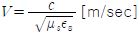
[m/sec]이다. - 자유공간 임피던스는
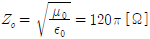
[Ω]이다. - 진행 방향에 대해서 전계와 자계가 서로 180[°]를 이룬다.
(정답률: 78%)
42. 비유전율(εs)이 1이고 비투자율(μs)이 9인 매질 내를 전파하는 전자파의 속도는 자유공간을 전파할 때와 비교해서 몇 배의 속도가 될까?
- 2배
- 1/2배
- 3배
- 1/3배
(정답률: 83%)
43. 다음 중 자유공간에서 전력밀도 P를 옳게 표현한 식은? (단 E는 전계의 세기, H는 자계의 세기이다.)
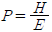
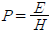
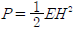
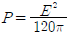
(정답률: 77%)
44. 그림과 같은 무손실 급전선에서 정재파 전압의 최대치가 300[V]라면 최소치 전압은 얼마인가?
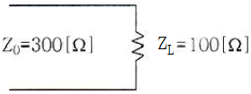
- 10[V]
- 50[V]
- 100[V]
- 200[V]
(정답률: 65%)
45. 스미스 도표에서 그림과 같이 동심원 A에서 동심원 B로 원의 반지름이 커졌을 때 설명이 옳지 않은 것은?
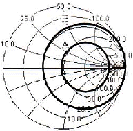
- 반사계수의 크기가 커진다.
- 전송전력이 작아진다.
- 반사파의 크기가 작아진다.
- 부하 임피던스와 소스 임피던스 차이값이 커진다.
(정답률: 63%)
46. 공기로 채운 슬롯(slot) 선로에서 정재파비(VSWR)가 4이고, 연속적인 전압의 최대값 사이가 15[cm]의 간격이다. 최초의 전압의 최대값은 부하로부터 7.5[cm] 앞에서 존재한다. 선로의 임피던스가 300[Ω]일 때 부하 임피던스는?
- 60[Ω]
- 65[Ω]
- 70[Ω]
- 75[Ω]
(정답률: 73%)
47. 그림에서 정규화 임피던스 1-j1[Ω]에 해당하는 지점은 어느 곳인가?
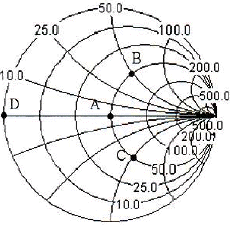
- 점 A
- 점 B
- 점 C
- 점 D
(정답률: 74%)
48. 분포정수형 평형-불평형 변환회로가 아닌 것은?
- 위상변환형
- 분기도체
- 반파장 우회선로
- 스페르토프(sperrtopf)
(정답률: 60%)
49. 개구 면적이 2.5[m2]인 파라볼라 안테나를 2[GHz] 주파수에서 사용할 때, 절대이득이 30[dB]이면 이 안테나의 개구효율은 약 얼마인가?
- 0.65
- 0.72
- 0.84
- 0.91
(정답률: 46%)
50. 주파수가 15[MHz]인 전기적 미소다이폴의 복사전계가 그 정전계보다 이론상 커지는 것은 송신안테나에서 대략 얼마만큼 떨어진 곳에서부터인가?
- 3.2[m]
- 2.2[m]
- 1.2[m]
- 0.2[m]
(정답률: 61%)
51. 자유공간에서 어떤 안테나가 200[W]의 전력을 방사할 때, 최대 방사방향의 송신점으로부터 50[km] 점에서 전기장 세기가 4[mV/m]이다. 이 안테나의 상대이득은 얼마인가? (단, log2=3으로 계산한다.)
- 3[dB]
- 4[dB]
- 5[dB]
- 6[dB]
(정답률: 66%)
52. 안테나의 기저부에 콘덴서를 삽입하는 이유는?
- 고유주파수보다 높은 주파수에 공진시킨다.
- 고유주파수보다 낮은 주파수에 공진시킨다.
- 접지저항을 감소시키기 위하여 사용한다.
- 접지저항을 증가시키기 위하여 사용한다.
(정답률: 76%)
53. 장중파 안테나에 대한 단파 안테나의 일반적인 특징에 대한 설명으로 틀린 것은?
- 광대역성의 예민한 지향특성을 갖는다.
- 파장이 짧으므로 고유파장의 안테나를 얻기 쉽다.
- 주로 수직편파를 이용하므로, 접지가 불필요하다.
- 복사 효율이 좋고, 반사기 등을 사용할 수 있다.
(정답률: 63%)
54. 잡음온도가 160[°K]인 안테나에 급전회로를 연결할 때, 200[°K]의 잡음온도가 측정되었다. 이 급전회로의 손실 값은 얼마인가? (단, 대역폭과 저항은 일정하다)
- 0.9
- 1.1
- 1.3
- 1.5
(정답률: 60%)
55. 대류권 산란파에 대한 설명으로 틀린 것은?
- 전파 경로 상의 지형에 대한 영향을 별로 받지 않는다.
- 공간 다이버시티를 이용하면 대류권 산란에 의한 페이딩을 방지할 수 있다.
- 짧은 주기를 갖는 페이딩이 발생한다.
- 전파 손실이 자유공간 손실보다 작은 값을 갖는다.
(정답률: 65%)
56. 페이딩과 이에 대한 방지 대책으로 적절하지 못한 것은?
- 원거리 간섭성 페이딩은 공간 다이버시티를 사용하여 줄일 수 있다.
- 흡수성 페이딩은 수신기에 AGC를 사용하여 줄일 수 있다.
- 선택성 페이딩은 주파수 다이버시티를 사용하여 줄일 수 있다.
- 도약성 페이딩은 MUSA 방식을 사용하여 줄일 수 있다.
(정답률: 75%)
57. 다중경로 페이딩에 의한 에러와 왜곡을 정하기 위한 방법이 아닌 것은?
- 순방향 에러정정
- 적응 등화
- 다이버시티
- 도플러 확산
(정답률: 78%)
58. 수정 굴절률에 대한 설명 중 틀린 것은?
- 수정 굴절률을 사용하면 구면 대기층에 대해서도 평면 대기층에 대한 스넬의 법칙을 적용할 수 있다.
- 표준대기에서 높이 h 에 대한 M 단위 수정 굴절률의 비 dM/dh 는 음수이다
- 수정 굴절률의 값은 높이와 비례관계에 있다.
- 수정 굴절률의 값은 굴절률과 비례관계에 있다.
(정답률: 74%)
59. 굴절률이 서로 다른 인접한 두 전리층 간을 아래 그림과 같이 전파가 진행할 때 옳은 것은?
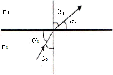
- n0sinα0=n1sinα1
- n0sinβ0=n1sinβ1
- n1sinα0=n0sinα1
- n1sinβ0=n0sinβ1
(정답률: 75%)
60. 다음 중 전파예보에서 알아낼 수 없는 것은?
- 전리층 반사파로 통신할 수 있는 가장 높은 주파수를 알 수 있다.
- 조건을 대입하여 LUF를 구할 수 있다.
- 송ㆍ수신점과 통신 시각에 따른 최적운용주파수를 구할 수 있다.
- 전리층과 대기권의 M곡선을 구할 수 있다.
(정답률: 61%)
4과목: 무선통신 시스템
61. 다음 중 수신전계의 변동에 따른 손실 보상을 하기 위한 것은?
- AGC 회로
- Pre-emphasis
- Pre-distorter
- Limiter
(정답률: 64%)
62. 송신기의 결합회로 중 π형 결합회로의 특징이 아닌 것은?
- 조정과 설계가 용이하다.
- 고주파 신호의 제거가 용이하다.
- 공중선과의 증폭도 조정이 용이하다.
- 임피던스 정합이 용이하다.
(정답률: 35%)
63. 전파의 창(Radio Window)의 범위를 결정하는 요소가 아닌 것은?
- 우주(대기)잡음의 영향
- 대류권의 영향
- 도플러 효과의 영향
- 전리층의 영향
(정답률: 74%)
64. 다음 주파수에서 다수의 반송파 신호를 사용하여 각 채널상에 비트를 실어 보내는 방식은?
- 위상분할 다중화
- 시분할 다중화
- 파장분할 다중화
- 직교주파수 분할 다중화
(정답률: 72%)
65. 다음 중 위성체에 사용되는 무지향성 안테나의 용도로 가장 적합한 것은?
- 11[GHz] 대역에서 무선측위용으로 주로 사용된다.
- Pencil Beam을 얻을 수 있어서 중계용으로 사용된다.
- 위성체의 명령이나 원격제어에 관한 데이터 전송을 위한 것이다.
- 차세대 위성 안테나 기술 중의 하나로 Multi Beam 용으로 사용된다.
(정답률: 66%)
66. 다음 중 우리나라의 디지털 이동전화에서 대역확산 통신방식을 사용하는 방식은?
- CDMA(Code Division Multiple Access)
- TDMA(Time Division Multiple Access)
- FDMA(Frequency Division Multiple Access)
- AMPS(Advanced Mobile Phone System)
(정답률: 78%)
67. 무선 근거리통신망의 ISM 대역에 대한 설명으로 적합하지 않은 것은?
- ISM 대역은 ITU에서 국제적으로 지정하였다.
- 산업ㆍ과학ㆍ의료 대역이라 불리우는 주파수 대역이다.
- ISM 대역을 사용하기 위해서는 별도의 무선국 허가절차가 필요하다.
- 우리나라가 해당하는 제3지역에서는 2.4~2.5[GHz] 등 10여개 대역이 지정되어 있다.
(정답률: 78%)
68. 위성의 다원 접속 방식이 아닌 것은?
- FDMA
- TDMA
- CDMA
- WDMA
(정답률: 81%)
69. 다중경로에 의한 신간 지연을 갖고 도달하는 각 반사파를 독립적으로 분리하여 복조할 수 있게 구성된 수신기는?
- 헤테로다인 수신기
- 호모다인 수신기
- 레이크 수신기
- 린 콤팩스 수신기
(정답률: 75%)
70. 프로토콜에 관련된 다음의 설명들 중 올바르게 기술된 것은?
- 통신하는 두 지점 사이에 적용되는 규칙이다.
- 통신 연결에서 상하위 레벨사이에만 적용된다.
- 소프트웨어 레벨에서만 프로토콜이 적용된다.
- 주로 기술문서 형태로 작성된다.
(정답률: 81%)
71. 다음 중 프로토콜의 주요 요소가 아닌 것은?
- 개체(entity)
- 구문(syntax)
- 의미(semantics)
- 타이밍(timing)
(정답률: 77%)
72. IPv6에 대하여 바르게 설명되지 않은 것은?
- 패킷 형식은 40[Bytes]로 고정된다.
- 주소체계는 16[Bytes]이다.
- 사용가능한 주소수는 약 43억개이다.
- flow label을 이용하여 QoS를 보장한다.
(정답률: 71%)
73. 다음 중 통신 프로토콜의 일반적 기능과 관계가 없는 것은?
- 연결 제어
- 흐름 제어
- 상태 제어
- 다중화
(정답률: 63%)
74. TCP/IP 프로토콜의 계층구조는 OSI 모델의 계층구조와 정확하게 일치하지 않는다. TCP/IP 프로토콜의 5개 계층구조에 속하지 않는 것은?
- 물리계층
- 데이터링크계층
- 세션계층
- 응용계층
(정답률: 63%)
75. 다음의 HDLC 프로토콜에 대한 설명 중 맞는 것은?
- 전달 계층의 정보 전달을 위한 프로토콜이다.
- 문자 방식의 프로토콜이다.
- point-to-point 방식만 사용 가능하다.
- Go-back-N ARQ 방식의 에러 제어를 사용한다.
(정답률: 73%)
76. 무선 통신 기술과 관계되지 않은 것은?
- IEEE 802.11b
- IEEE 802.15.1
- IEEE 802.15.3
- IEEE 1394
(정답률: 80%)
77. 전파의 회절 현상에 대한 설명 중에서 잘못된 것은?
- 파장이 길수록 적게 일어난다.
- 주파수가 낮을수록 많이 일어난다.
- 중/장파 대역에서 많이 일어난다.
- 초단파 대역에서도 발생할 수 있다.
(정답률: 64%)
78. 최적의 무선 환경을 구축할 수 있도록 하기 위한 기지국 통화량 분산의 방법이 아닌 것은?
- 섹터간 커버리지 조정
- 인접 셀간 커버리지 조정
- 기지국 이설 및 추가
- 커버리지를 위한 안테나 조정
(정답률: 63%)
79. 무선통신시스템 설계시 단파가 중장파보다 불리한 점은 어느 것인가?
- 복사 능률이 더 낮다.
- 페이딩의 영향이 더 크다.
- 안테나 설치가 어렵다.
- 원거리 통신에 불리하다.
(정답률: 62%)
80. 텔레비전 방송국에서 무선설비의 점유주파수대폭 허용치는 다음 중 어느 것인가?
- 3[MHz]
- 4[MHz]
- 5[MHz]
- 6[MHz]
(정답률: 78%)
5과목: 전자계산기 일반 및 무선설비기준
81. 다중프로그래밍(multi-programming)을 위하여 시스템이 갖추어야 할 것 중 관계가 가장 적은 것은?
- 인터럽트(interrupt)
- 가상메모리(virtual memory)
- 시분할(time slicing)
- 스풀링(spooling)
(정답률: 68%)
82. 자외선을 이용하여 지울 수 있는 메모리는 어느 것인가?
- PROM
- EPROM
- EEPROM
- 플래쉬 메모리(Flash Memory)
(정답률: 79%)
83. I/O 채널(channel)의 설명 중 맞지 않는 것은?
- CPU는 일련의 I/O 동작을 지시하고 그 동작 전체가 완료된 시점에서만 인터럽트를 받는다.
- 입출력 동작을 위한 명령문 세트를 가진 프로세서를 포함하고 있다.
- 선택기 채널(selector channel)은 여러 개의 고속 장치들을 제어한다.
- 멀티플렉서 채널(multiplexer channel)에는 보통 하드디스크 장치들을 연결한다.
(정답률: 59%)
84. 마이크로컴퓨터의 기본 정보는 ‘0’과 ‘1’로만 표현되며, 이러한 부호의 조합을 명령(instruction)이라고 한다. 그리고 명령들은 어떤 목적과 규칙에 따라 나열되고, 메모리에 저장되는데 이것을 무엇이라고 하는가?
- 데이터(DATA)
- 소프트웨어(software)
- 신호(Signal)
- 2진 코드
(정답률: 73%)
85. 0-주소 명령어(zero-addressing instruction)에서 사용하는 특정한 기억장치 조직은 무엇인가?
- 그래프(graph)
- 스택(stack)
- 큐(queue)
- 트리(tree)
(정답률: 77%)
86. 다음 중 입력 장치들에 사용되는 매체가 아닌 것은?
- 천공 카드(punch card)
- 사운드 카드(sound card)
- OMR 카드
- 바 코드(bar code)
(정답률: 75%)
87. 다음 중 순차파일(sequential file)의 특징이 아닌 것은?(오류 신고가 접수된 문제입니다. 반드시 정답과 해설을 확인하시기 바랍니다.)
- 새로운 레코드를 삽입하는데 효율적이다.
- 레코드 탐색시 선형탐색을 해야 한다.
- 이전의 레코드를 탐색하려면 파일을 되돌리면 된다.
- 레코드를 삭제하려면 새로운 파일을 작성해야 한다.
(정답률: 62%)
88. 메모리관리에서 빈 공간을 관리하는 free 리스트를 끝까지 탐색하여 요구되는 크기보다 더 크며 그 차이가 제일 작은 노드를 찾아 할당해주는 방법은 어느 것인가?
- 최초적합(first-fit)
- 최적적합(best-fit)
- 최악적합(worst-fit)
- 최후적합(last-fit)
(정답률: 87%)
89. 디스크를 사용하려면 최초에 반드시 해야 할 사항은 무엇인가?
- 내용을 지우고 잠근다.
- 파티션을 만들고 포맷한다.
- 폴더와 파일들로 채운다.
- 시분할(time slice)한다.
(정답률: 86%)
90. 운영체제는 컴퓨터 시스템을 구성하는 요소 중의 하나로 시스템에 제공되는 기능(또는 목적)으로 올바르게 짝지어진 것은?
- 편의성-효율성
- 청각성-정확성
- 시각성-편의성
- 청각성-신속성
(정답률: 86%)
91. 주파수대폭의 허용치에 있어서 무선설비규칙에 규정되어 있지 않은 사항에 대하여는 어떠한 것을 적용하는가?
- 방송통신위원회 별도 지침에 따른다.
- 국제전기통신연합(ITU)에서 정하는 바에 따른다.
- 실제 측정하여 자체 공시 후 적용한다.
- 전파지정기준에 따른다.
(정답률: 75%)
92. 소출력 텔레비전 방송국의 무선설비로서 470[MHz] 초과 960[MHz] 이하의 주파수대역에서 영상 첨두포락선전력이 1[W]이하인 무선설비의 주파수허용편차는 다음 중 얼마인가?
- 10[Hz]
- 100[Hz]
- 10[kHz]
- 100[kHz]
(정답률: 57%)
93. 방송통신위원회가 전파자원의 공평하고 효율적인 이용을 촉진하기 위하여 필요한 경우에 시행하여야 할 사항으로 적합하지 않은 것은?
- 주파수 회수
- 주파수 분배의 변경
- 주파수의 단독 사용
- 새로운 기술방식으로의 전환
(정답률: 75%)
94. 다음 중 방송국 개설허가 심사사항이 아닌 것은?
- 당해 법인의 설립이 확실한지의 여부
- 송신소 시설의 보유여부
- 연주소 시설의 보유여부
- 운용할 수 있는 기술적 능력의 보유여부
(정답률: 54%)
95. 초단파 방송용 무선설비의 신호대잡음비는 1,000[Hz]의 변조주파수에 따라 최대주파수편이로 변조한 송신장치는 75[μs]의 시정수를 가진 임피던스 주파수특성의 회로에 따라 디엠파시스를 행한 경우 몇 데시벨 이상이어야 하는가?
- 60[dB]
- 70[dB]
- 80[dB]
- 90[dB]
(정답률: 57%)
96. 통신설비인 전파응용설비 중 유도식통신설비에서 발사되는 주파수 범위는 얼마이어야 하는가?
- 9[kHz]~450[kHz]
- 9[kHz]~350[kHz]
- 9[kHz]~250[kHz]
- 9[kHz]~150[kHz]
(정답률: 28%)
97. 방송통신위원회의 허가를 받아야 하는 전력선통신설비의 주파수대역과 고주파출력이 맞게 짝지어진 것은?
- 9[kHz]이상 30[MHz]까지, 10와트 이하
- 3[kHz]이상 60[MHz]까지, 50와트 이하
- 9[MHz]이상 30[MHz]까지, 10와트 이하
- 3[MHz]이상 30[MHz]까지, 50와트 이하
(정답률: 31%)
98. 적합성평가의 전부가 면제되는 기자재가 아닌 것은?
- 시험연구를 위하여 수입하는 100대 이하의 기자재
- 외국의 기술자가 국내산업체 등의 필요에 따라 일정기간 내에 반출하는 조건으로 반입하는 면제확인 수량만큼의 기자재
- 전시회, 경기대회 등 행사에서 판매를 하기 위한 정보통신기자재
- 기간통신사업자ㆍ별정통신사업자 또는 전송망사업자가 해당역무에 사용하는 기자재
(정답률: 65%)
99. 무선설비의 변조특성 등에 대한 기술기준으로 적합하지 않은 것은?
- 진폭변조되는 송신장치는 변조도가 100[%] 초과하지 아니하여야 한다.
- 주파수변조되는 송신장치는 최대주파수편이의 범위를 초과하지 아니하여야 한다.
- 무선설비는 최고 변조주파수에서 안정적으로 동작하여야 한다.
- 편향변조에 의하여 점유주파수대폭이 충분하여야 한다.
(정답률: 57%)
100. 미약 전계강도 무선기기의 기술기준에서 322[MHz] 미만의 주파수를 사용하는 무선기기는 3[m] 거리에서 측정한 전계강도가 얼마 이하이어야 하는가?
- 100[μV/m] 이하
- 500[μV/m] 이하
- 1[mV/m] 이하
- 10[mV/m] 이하
(정답률: 54%)